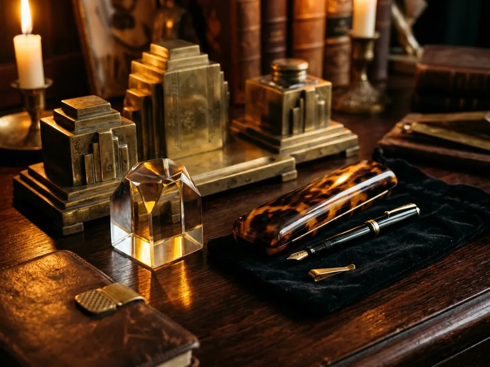
Geometric Brass
Ziggurat stepped profiles, engine-turned guilloché watch cases, and hand-rubbed mahogany.
Materials: Solid Brass · Bevelled Crystal · Ebonite
Prized: Unpolished hunter cases & blued hands.
Filter 1920s Lots03 · CALIBRATING ARCHIVE DIAL
Private Collector's Archive · Est. 2014 · Vault Dispatch
Authenticated 1920s–1990s radios, folding bellows cameras, clockwork tin toys, and horological instruments—bench-inspected, provenance-documented, and ready for your study.
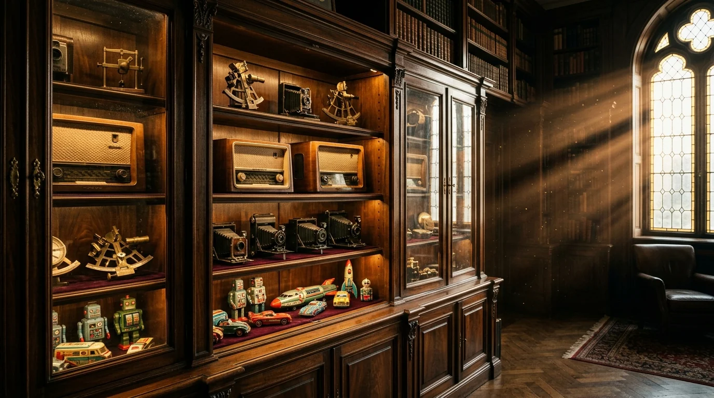
1,200+
Pieces Sourced
9
Decades Covered
100%
Authenticity-Checked
38
Countries Served
Chronological Index · 1920s–1990s
Slide the tuning needle or select any decade card to explore its material language and filter the live archive below.

Ziggurat stepped profiles, engine-turned guilloché watch cases, and hand-rubbed mahogany.
Materials: Solid Brass · Bevelled Crystal · Ebonite
Prized: Unpolished hunter cases & blued hands.
Filter 1920s Lots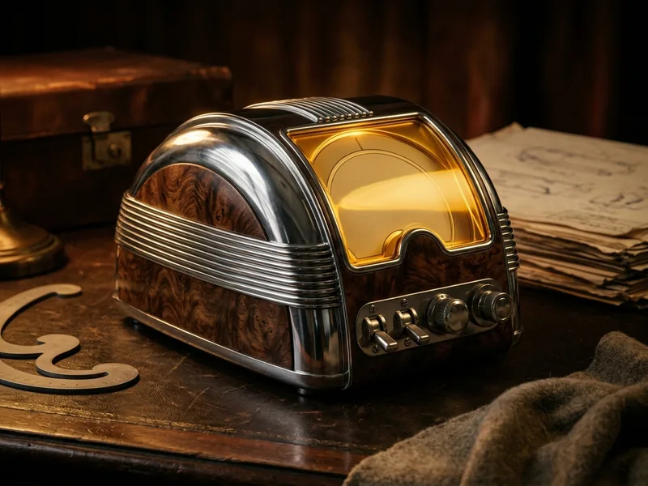
Locomotive-inspired horizontal speed ribs, glass typewriter keys, and burled walnut cabinetry.
Materials: Nickel-Chrome · Cast Iron · Burled Walnut
Prized: Intact glass keytops & original japanning.
Filter 1930s LotsIngenious stamped tin-litho automata alongside heavy vernier dials and tortoiseshell phenolics.
Materials: Tin Litho · Phenolic Bakelite · Spring Steel
Prized: Untouched factory lithography & captive keys.
Filter 1940s Lots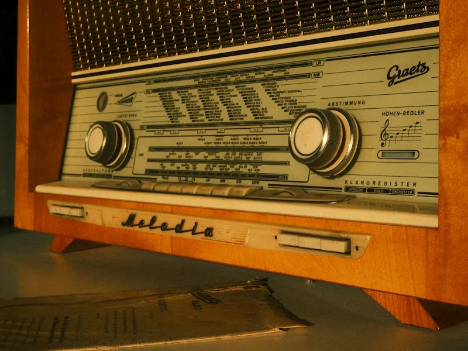
Warm vacuum-tube tabletop radios and kiln-fired porcelain garage plaques rich in relief.
Materials: Swirled Bakelite · Vitreous Enamel · Brass
Prized: Crack-free cabinets & high-gloss stencil relief.
Filter 1950s LotsPrecision folding bellows cameras and portable leatherette turntables built for effortless travel.
Materials: Kidskin Leather · Chrome · Smoked Acrylic
Prized: Light-tight bellows & clean multi-coated glass.
Filter 1960s LotsMustard-ochre rotary telephones, weighted flywheel tuners, and glowing amber analog meters.
Materials: Dyed ABS · Brushed Aluminium · Oiled Teak
Prized: Unfaded ochre polymers & twin brass bell gongs.
Filter 1970s Lots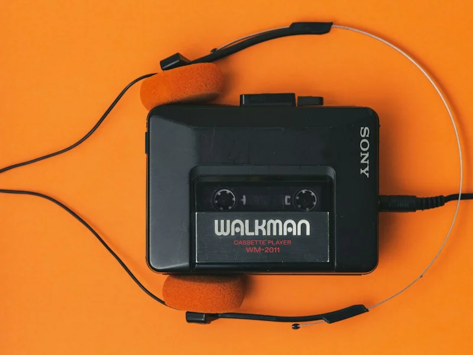
Jewel-like Japanese personal cassette players machined down to the millimetre of a tape shell.
Materials: Champagne Alloy · Gunmetal · Orange Foam
Prized: Quartz-locked capstans & dent-free metal cases.
Filter 1980s Lots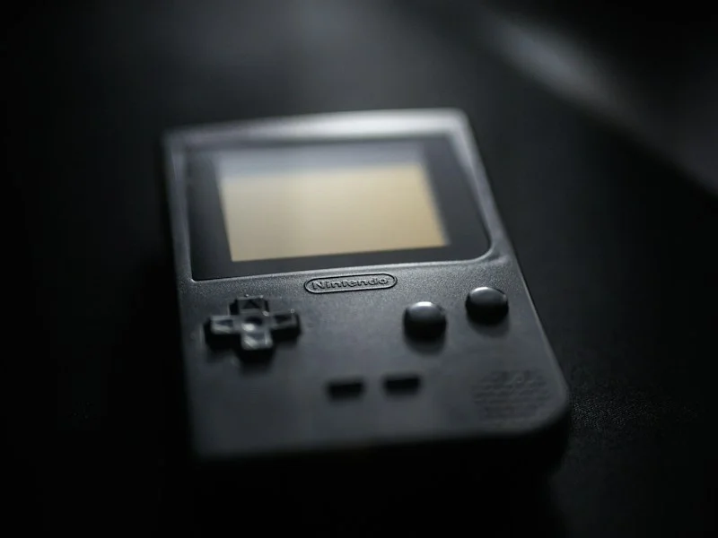
Playful handheld consoles and smoky translucent shells marking the twilight of dedicated hardware.
Materials: Putty ABS · STN Olive Glass · Silicone
Prized: Un-yellowed shells & flawless dot-matrix LCDs.
Filter 1990s LotsAuthenticated Vault Catalogue
Every lot below has passed physical inspection on our conservation bench. Inspect full provenance stories, check grading metrics, or enquire directly.
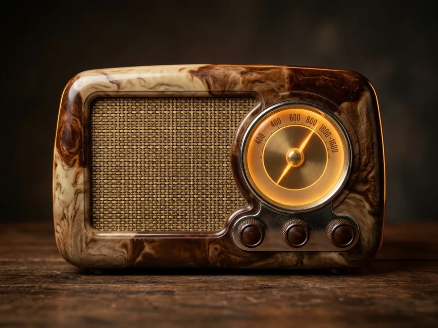
Audio & Radio · LOT 0104
Swirled ivory-and-walnut phenolic cabinet with five warm miniature valves and glowing rotary dial.
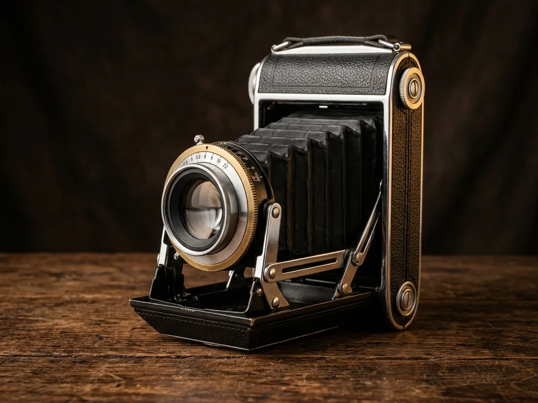
Cameras · LOT 0112
Light-tight pleated kidskin bellows, coated 75 mm f/3.5 optics, and timed mechanical leaf shutter.
Telephony & Office · LOT 0119
Scandinavian harvest-ochre desktop housing with smooth brass governor and resonant twin-bell chime.
Toys & Games · LOT 0126
Early post-war stamped tinplate pin-walker with untouched factory lithography and captive brass key.
Telephony & Office · LOT 0131
Gloss black japanned frame, nickel-ringed glass keytops, aligned elite typebars, and fresh silk ribbon.
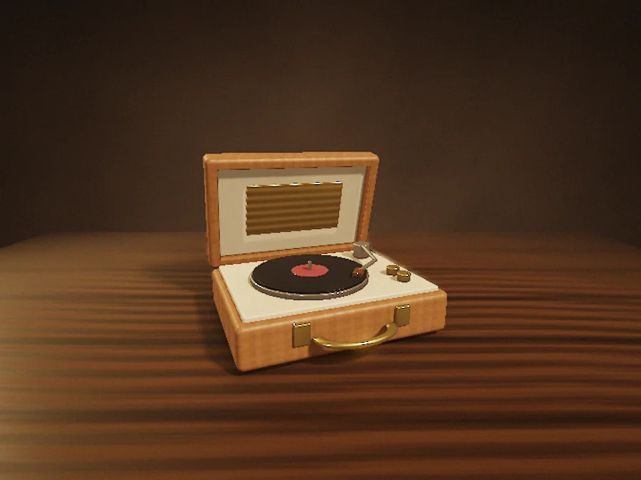
Audio & Radio · LOT 0138
Saddle-tan and cream leatherette four-speed turntable with lid speaker and new diamond stylus.
Timepieces · LOT 0142
17-jewel Jura lever movement, barleycorn engine-turned dial, blued hands, and Albert curb chain.
Advertising & Signs · LOT 0147
Convex kiln-fired multi-stencil vitreous enamel in oxblood, cream, and teal with brass grommets.
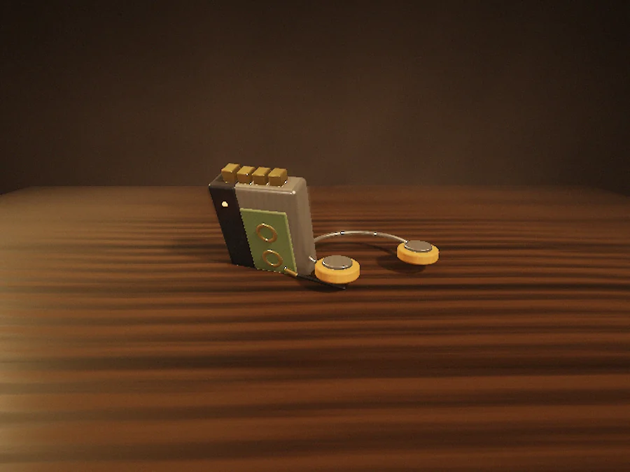
Audio & Radio · LOT 0153
Quartz-locked champagne aluminium stereo deck with smoked tape window and orange-foam headphones.
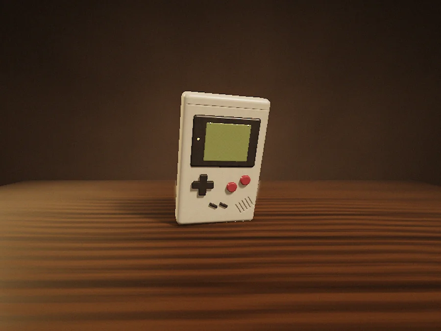
Toys & Games · LOT 0161
Un-yellowed putty-grey shell, crisp zero-dead-line olive LCD screen, and tactile maroon buttons.
Try clearing your search term or resetting the decade and category chips.
The Archivist's Journal
Long-form notes on industrial craft, material aging, and the quiet rituals built into twentieth-century machines.
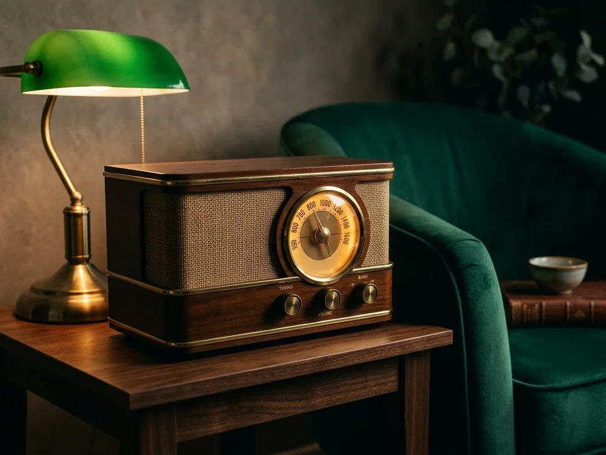
Before solid-state silicon made sound instantaneous, turning on a 1950s tabletop wireless was a small domestic ceremony. A click of the Bakelite rotary switch sent current into miniature glass heaters; for four expectant seconds the room stayed silent while the pilot bulb swelled from dull ember to honeyed gold.
Phenolic Bakelite—humanity’s first fully synthetic thermosetting plastic—lent those cabinets an acoustic density modern thin-wall styrene never replicated. Combined with paper-cone drivers and warm even-order valve harmonics, human voices sounded astonishingly present in the room.
“You didn’t merely listen to a tube radio in the dark—you gathered around its dial like a miniature hearth.”
Pick up a late-1940s clockwork robot and examine its seams: not a single drop of glue or plastic snap-fit holds it together. Every torso plate, lithographed gauge, and articulated claw was stamped on steel dies and locked shut with folded metal tabs never meant to be pried apart.
Because children wound them hard across hardwood hallways, surviving examples carry unmistakable biographies. Seasoned collectors prize crisp, original offset lithography with honest play-wear infinitely higher than sterile modern repaints.
“Folded tin tabs cannot lie—untouched factory paint and a strong steel mainspring are the true hallmarks of post-war ingenuity.”
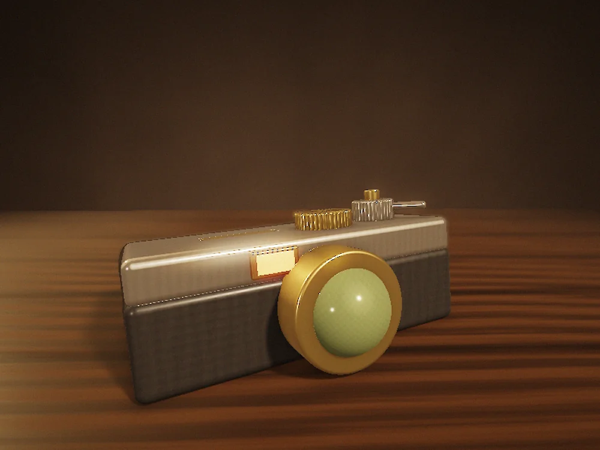
Engraved millimetres beside a brass accessory shoe or circling a front lens retaining ring sits a six-digit number that unlocks an instrument’s entire biography. Cross-referenced against surviving factory ledgers, those digits reveal not just the calendar quarter of assembly, but whether its optical glass came from an experimental lanthanum melt.
On our bench, matching body numbers against lens-shutter serial blocks exposes post-period part swaps immediately—ensuring every camera we catalogue retains coherent mechanical pedigree.
“A matched body-and-lens serial pair tells a collector two precision assemblies have travelled together for sixty years.”
Curatorial Standard
Why museum curators, prop masters, and private collectors across thirty-eight countries entrust their acquisitions to RetroCollect.
Every piece is cross-checked against period catalogues, alloy hallmarks, and serial ledgers—never reproductions.
Unretouched studio photography and candid six-tier grading covering cosmetics, mechanics, and originality.
Valves pulled and sleeved separately, bellows supported in custom charcoal foam, fully insured door-to-door.
Each acquisition ships with tailored voltage, winding, humidity, and display lighting recommendations.
Signed archival folio recording maker origin, prior estate history where known, and bench test metrics.
Macro Plates & Vitrine Studies
Ten close-range studies of knurled brass, porcelain glaze, vitrine shelves, and workshop craft. Click any plate to inspect in our full-screen Lightbox.
Illuminated 1950s glass tuning scale & brass pointer
Knurled solid brass & ribbed Bakelite gain knob
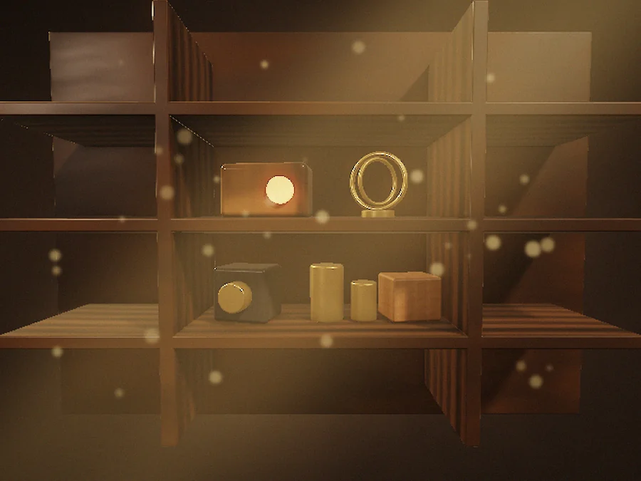
Afternoon shafts across our optical archive shelves
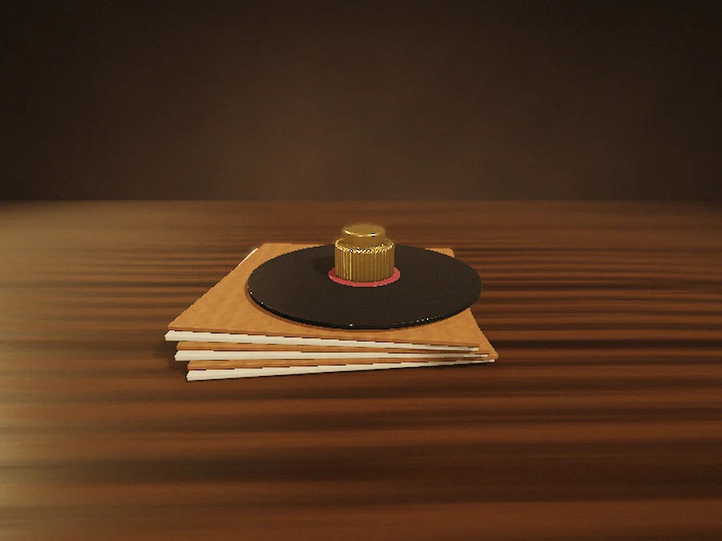
Archival LP sleeves & turned brass stabilizer weight
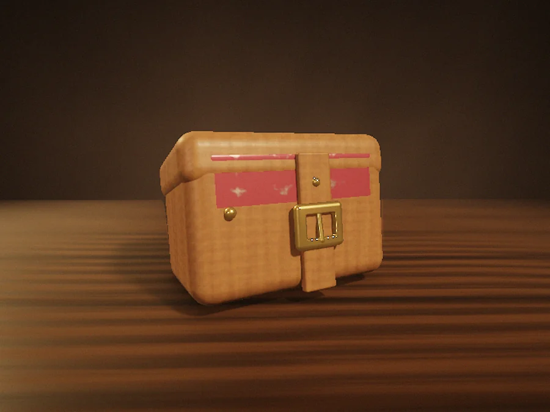
Hand-stitched chestnut field case & brass buckle
Fired porcelain-enamel relief & brass grommet
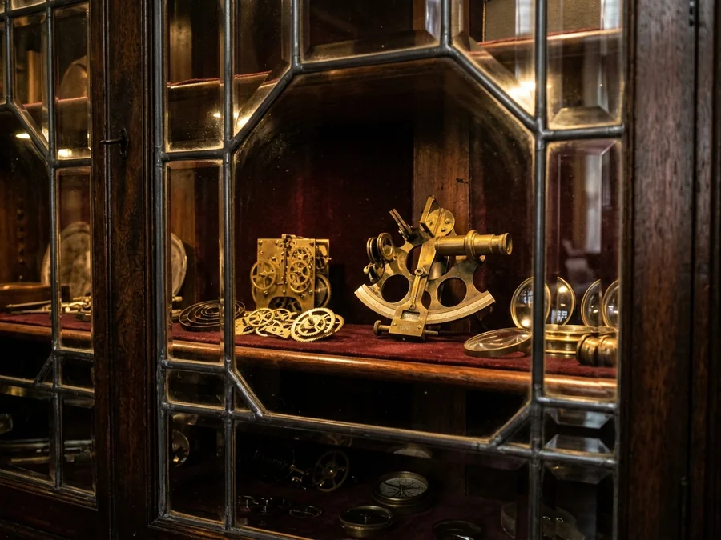
Horological & optical instruments inside Vitrine IV
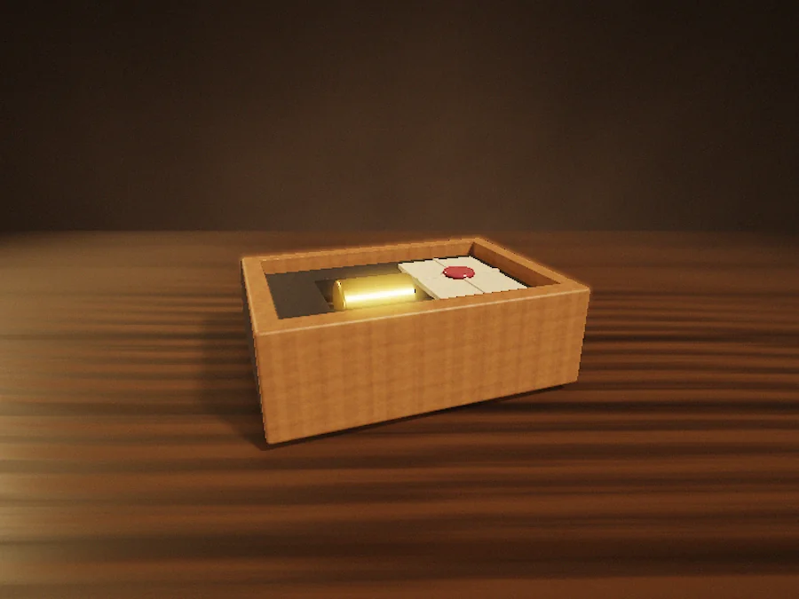
Custom foam crating & crimson archival wax seal
Inspection glass & loupe on our provenance ledger
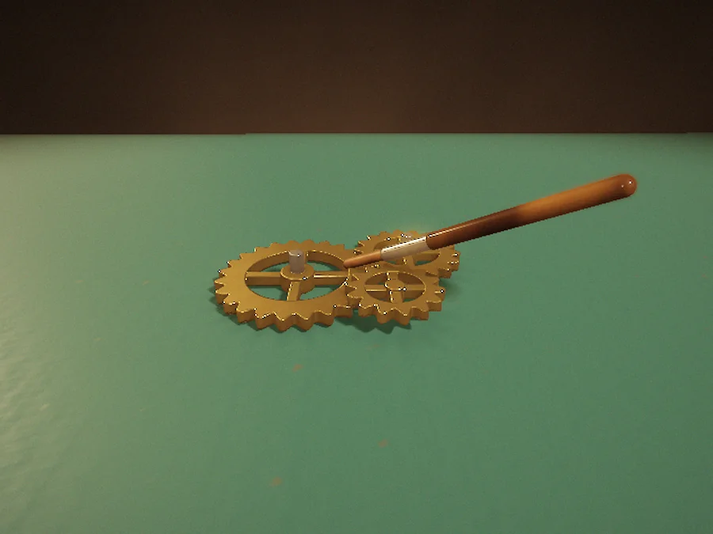
Sable brush cleaning involute brass clockwork gears
Private Estate Acquisitions & Consignment
Whether parting with a single inherited timepiece or cataloguing an entire lifetime radio and camera room, we offer outright purchase or transparent commission consignment.
Sell or Consign a Piece →Verified Collector Notes
Filed correspondence from fellow enthusiasts, designers, and horologists who collect with us.
Collector Reference
Clear answers on authentication, electrical safety, international customs, reservations, and care.
Direct Curator Desk
Every enquiry is read personally by our senior archivist within one business day—no automated bots, no pushy sales scripts.
Reading Room & Vault
Private viewing appointments welcome Thursday–Saturday, or live high-resolution video inspection worldwide.
Your note has been safely logged with our curator desk. Our senior specialist replies with full condition reports within 24 hours.